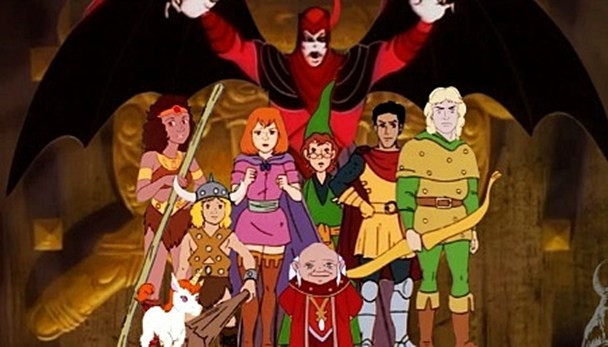
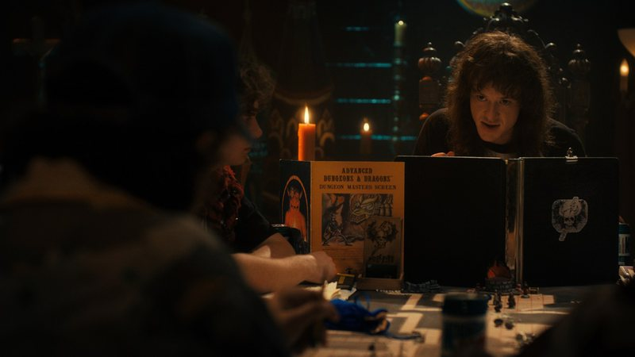

História de Dungeons and Dragons
O nosso querido “Dragões e Masmorras” não nasceu com esse nome, no inicio ele chamava "The Fantasy Game" e foram David Wesely, Gary Gigax e Dave Anerson seus criadores. Na década de 70 esses três amigos se reuniam para jogar wargames, e para deixar os jogos mais interessantes passaram a criar novas, interpretar e desenvolver melhor os personagens e somado ao cenário fantasioso de Tolkien deu origem ao D&D que conhecemos hoje, que foi lançado em 1971 como uma spin-off para o wargame Chainmail.
Gary Gigax
Dave Arneson
David Wesely
Curiosidades
Ao longo de tantos anos, esse sistema conquistou uma legião de fãs e virou ícone da cultura pop, sendo assim não poderia ser diferente e ele recebeu diversas homenagens e referencias em filmes, series, jogos e desenhos.
Caverna de Dragão
Algo que eu tenho certeza que marcou muita gente (até a mim) foi o desenho caverna do Dragão que infelizmente não chegou a ter um final. Nele um grupo de crianças vai parar em uma outra dimensão e vivendo aventuras com inúmeros elementos de RPG, dragões, magos, bárbaros, cavaleiros e até a figura do mestre que é representada pelo Mestre dos Magos. Você já tinha percebido que até o nome faz alusão ao jogo?
Stranger Things
Agora é para aqueles que acompanham as novidades, recentemente com a quarta temporada de Stranger Things o RPG voltou a ser um assunto bem debatido e com diversos novos jogadores. Na série, além de mostrar os personagens jogando D&D e dar uma grande importáncia na trama central, ele retrata um pouco do preconceito que jogo sofreu na década 80 e pega elementos do universo de Dungeons and Dragons, como o Vecna, considerado um dos maiores vilões de D&D e que recebeu um papel a sua altura na série.